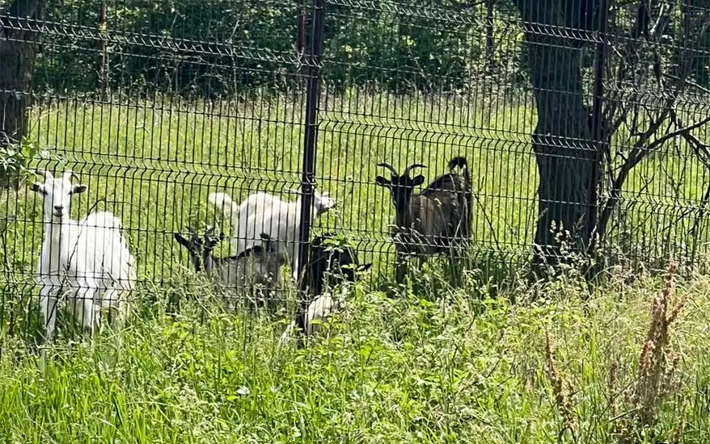
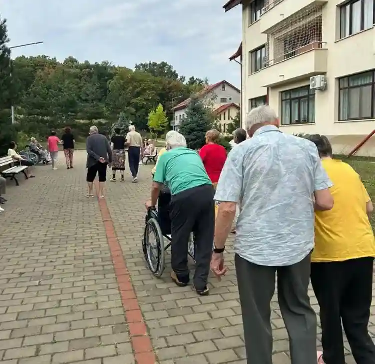
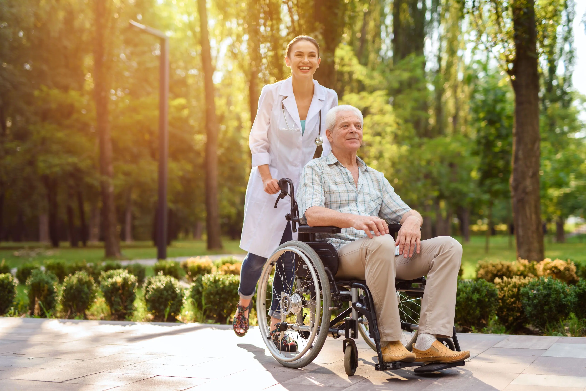

îmbătrânirea face parte din cursul natural al vieții, dar uneori poate aduce cu sine provocări care afectează abilitățile zilnice ale oamenilor. în efortul de a sprijini și de a îmbunătăți calitatea vieții rezidenților noștri, SENIORUM a adus în prim plan o metodă terapeutică esențială și eficientă: ergoterapia. în acest articol, vom explora cum ergoterapia este integrată în viața rezidenților noștri și cum aduce beneficii semnificative în viața lor de zi cu zi.
La SENIORUM, fiecare rezident primește o evaluare personalizată pentru a identifica nevoile și obiectivele lor specifice. De la acțiuni simple precum a se îmbrăca și a se hrăni, până la activități mai complexe precum a găti sau a se angaja în hobby-uri preferate, ergoterapeuții lucrează în strânsă colaborare cu rezidenții pentru a dezvolta planuri personalizate de tratament. Aceste planuri vizează nu doar îmbunătățirea abilităților fizice, ci și creșterea încrederii și a independenței.
în plus, ergoterapia are capacitatea de a reînnoi pasiunea pentru activitățile preferate. Fie că este vorba despre pictură, lectură, sau grădinărit, terapeuții colaborează cu rezidenții pentru a identifica modalități creative de a face aceste activități mai accesibile. Acest proces nu doar că îmbunătățește abilitățile, ci aduce și bucuria reînnoită în viața de zi cu zi.

în timp ce avantajele fizice ale ergoterapiei sunt bine documentate, nu trebuie să subestimăm puterea sa de a construi și întări relații umane. Terapeuții și rezidenții dezvoltă o conexiune specială, bazată pe încredere și împărtășirea unui scop comun. Conversațiile sincere și realizările împărtășite în timpul ședințelor de terapie creează o atmosferă de sprijin și comunitate care să dureze mai mult decât durata unei ședințe.
Ergoterapia la SENIORUM este mult mai mult decât o terapie medicală, este un parteneriat între rezidenți și terapeuți pentru a învinge limitele și a descoperi noi orizonturi. De la dezvoltarea abilităților până la regăsirea încrederii și a bucuriei în viață, aceasta este o călătorie a transformării personale. în mijlocul acestui proces, ergoterapia la SENIORUM îmbrățișează fiecare pas înainte și redă fiecărui rezident o rază de lumină și speranță pentru viitor.
Un alt aspect important este creșterea stimei de sine și a încrederii în propriile abilități. într-o lume care poate aduce cu sine provocări, poate fi ușor să se simtă lipsa valorii personale. Ergoterapia la SENIORUM echilibrează acest aspect, ajutând rezidenții să-și redescopere potențialul și să-și concentreze atenția asupra realizărilor lor. Fiecare obstacol depășit devine o dovadă a rezilienței lor și îi încurajează să abordeze noi provocări cu încredere.
în final, ergoterapia la SENIORUM nu se oprește la a vindeca sau a trata, ci se extinde pentru a îmbogăți viața într-o varietate de moduri. De la stimularea cognitivă până la îmbunătățirea relațiilor sociale și a stimei de sine, aceasta aduce beneficii care depășesc barierele fizice și mentale. Este o modalitate de a cultiva o viziune pozitivă asupra îmbătrânirii și de a recâștiga controlul asupra propriei vieți, inspirându-i pe rezidenți să abordeze fiecare zi cu încredere și entuziasm.

Poate te întrebi de ce un azil de bătrâni poate să fie viitoarea ta casă. Noi avem răspunsurile și suntem gata să ți le oferim...
Citește articol
în era tehnologiei și a modernizării, SENIORUM alege să își destindă rezidenții cu plimbări în inima naturii...
Citesșe articol
în ritmul alert al vieții moderne, în care tehnologia domină, există un spațiu în care mișcarea devine...
Citește articol